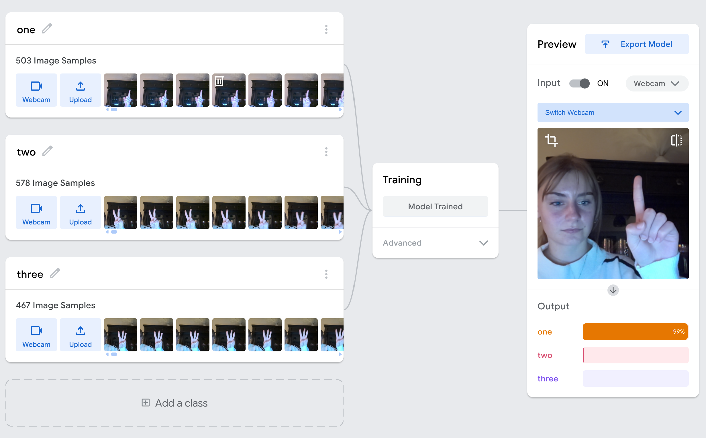

Teachable Machine Project
This page showcases our machine learning model, training process, and project reflection.
📌 Live Machine Learning Demo
Try our hand-sign classifier trained with Teachable Machine and deployed using p5.js and ml5.js.
*If the webcam does not load, please refresh or allow camera permissions.
📌 Model Training Process
Below are the details from our model creation process, including dataset size and challenges during training.

Training Notes
- I originally planned to classify hand signs for 1–5, but it required too many images for reliable accuracy.
- I restarted the training because turning my hand caused fingers to overlap and the model misclassified them.
- The final version only recognizes right hand, palm facing forward.
- Images were captured in all four corners of the screen + center.
- Dataset size:
- one → 503 images
- two → 578 images
- three → 467 images
📌 Model & Code Links
- 🔹 Live Demo (iframe version): Click here
- 🔹 View Only: p5.js View
- 🔹 Edit Code: p5.js Edit
- 🔹 Teachable Machine Model: Model Page
📌 Code Snippet
Below is an excerpt from the p5.js implementation of our model.
/*
Hand Sign Teachable Machine Classifier
Using ml5.js + p5.js
-> Live webcam feed
-> Classifies hand signs (1, 2, 3)
-> Emoji number in top-right corner
-> Instruction banner at top
-> Label bar at bottom
*/
let video;
let label = "loading...";
let classifier;
function preload() {
classifier = ml5.imageClassifier(
'https://teachablemachine.withgoogle.com/models/7X2wmwi8j/model.json'
);
}
function setup() {
createCanvas(640, 520);
video = createCapture(VIDEO);
video.hide();
classifyVideo();
}
Full code available in the “Edit Code” link above.
📌 Project Reflection Statement
Below is our full project reflection. The text is placed inside a scrollable box to keep the webpage clean and easy to navigate.
Project Statement
By Gabrielle Czeremuga, Carol Oh, and Gianna Wu
As we read unmasking AI it would be insufficient to say that we only learned a lesson or two, when in reality our eyes were open to lackings within the AI bloom. As we work to complete this final project, one of the main lessons that Dr. Joy Buolamwini specifically emphasised in her book, “Unmasking AI”, is that AI models have a “coded gaze”. Because AI models are trained off of data and are created by human coders, it is impossible to not implement some implicit bias into the code. For example, if the data that you are using does not take into account diversity or intersectionality it is extremely likely that you would create a biased and unfair system within your code. Additionally, humans have many different types of implicit biases which causes this bias to creep into their work without their knowledge. Although this concept might seem intuitive when it comes to AI, the outputs are crafted beyond the human mind and it is easy to not see the bias within the results.
Buolamwini witnessed first hand these biased systems with her Mirror of Positivity. Her mirror was supposed to show positive affirmations around her reflection in a mirror, but the code that she was using did not recognise her face. At first this seemed like a trivial issue to Buolamwini, but it opened her eyes to how biased code can easily ruin the output for the user. She then came to the discovery that many highly competitive companies' AI systems operate off of biased code and output biased results. Most of these companies took many steps and precautions when creating their AI to not implement biases, but it is almost impossible because of the implicit biases in the human mind. Buolamwini emphasises this and explicitly suggests that this is why testing systems for bias is extremely important since bias can not always be seen by the naked eye. As we work through our Teachable Machine (TM) we will not forget Buolamwini’s emphasis and test our model to decrease the amount of bias present.
As we not only work to try to incorporate the least amount of bias and test our machine for bias, Buolamwini’s lessons about what and why intersectionality is important also resonants with us. Intersectionality is the idea that many different aspects of social identities interact giving individuals unique experiences and privileges. Intersectionality is integral for understanding the human experience. When Buolamwini discussed any AI system and its effect on humans, intersectionality was always something that came to the forefront. Creating an AI system is very hard and because of the expertise needed there is a very small group of people who work on them. This small group of people also tend to have very similar social identities which causes the intersectionality of the group to not be diverse. When a non-diverse group of people work on a project together it is possible that their implicit biases are incorporated into their work and are not noticed since they have the same biases based on their intersectionality. For example, when Buolamwini created a positivity mirror the original authors of the code included only white faces in their dataset. This probably caused them no problems when testing their model because they were most likely white and did not think to add darker skin tones to the dataset. Understanding that a lack of intersectionality can also cause bias in our TM, we will have many people review our machine and include many different types of data before it gets submitted as our final project.
Having a diverse set of data is important to create non-biased code but as we worked on our TM we noticed that having a diverse set of data causes many errors in our output. When we first created our TM it became very apparent how hard it was for our machine to operate based on many different types of images. Our machine will tell the user how many fingers they are holding up to the camera, but as we began uploading more and more photos more and more errors in our output would occur. Originally we were confused but then we realized that as we uploaded more images depending on the direction our hand was facing it would find a different amount of fingers. We then settled on the solution of only using pictures of hands where the user's palm is facing the camera and in the middle of the screen. While that seems to solve most of the problems, it shows us that finding images that will create the most accurate output causes us to exclude other images. This exclusion could eventually lead to the bias in our data and then also in our machine.
One other thing to note is that everyone in our group has lighter skin tones, so we did not have the opportunity to test if our TM would work with a hand with a darker skin tone. With no images that we could sample or create quickly, finding images with our specifications of a hand with the palm facing the camera counting and in the middle of the screen has been near impossible. Keeping this in mind, we will continue to try to find and implement more images of different skin tones by the end of this course. Thankfully, one thing that did not affect our output was the color of the background. As long as the hand was in the middle of the screen with the palm facing forward the output was not affected and continued to stay accurate. One final thing to note is that there are many different ways to count using your fingers. Unfortunately, as we mentioned before, having a diverse set of images started to affect the output of our TM, so we only included numbers 1–3 that were counted using the index, middle, and ring fingers. If the user of our TM counts using different fingers then the output will be incorrect. Overall, continuing to add a diverse color of skin tones and implementing more counting methods, our TM will be distributing more accurate outputs using Buolamwini’s lessons of intersectionality and the “coded gaze".
Based on the previous main takeaways that were mentioned it might seem that AI and learning machines are not good things and are creating another level of harm for the communities and societies in which they exist. But even though it might seem that way, Buolamwini emphasises that these machines have limits and downfalls that are reflected in the output, but these machines are also the aspirations of those individuals trying to create something to better the world around them. It is the case that in order to make something better you must identify what could be improved upon which means pointing out limits and drawbacks. The limits and drawbacks to these machines should be acknowledged and Buolamwini reminds the reader that these things can be mitigated and fixed. We have to acknowledge that despite our best efforts our TM might have some limits and biases but that does not make our machine inherently bad, and as long as we continue working to mitigate these things we will promote more good.
The final thing that resonated with us was not only in Buolamwini’s work but also in all of the other materials in this class was to keep working to make things better. Just because it might seem like things will never change because of problems such as implicit biases; acknowledging the problem is the first step in the right direction. Buolamwini and many other authors have highlighted the many harms that technology, whether it be hashtags or AI, has brought on society. But by acknowledging this, we can start working to fix the problems and create positive change. Coding is challenging enough in and of itself and can become even more daunting when thinking about all the negative and positive implications it could have. Buolamwini and all the other authors remind us that it is not about being perfect but learning and growing from mistakes. So, the last thing that we are going to work toward on this assignment is not perfection but rather learning so we can be better coders and our TM can have a positive impact.